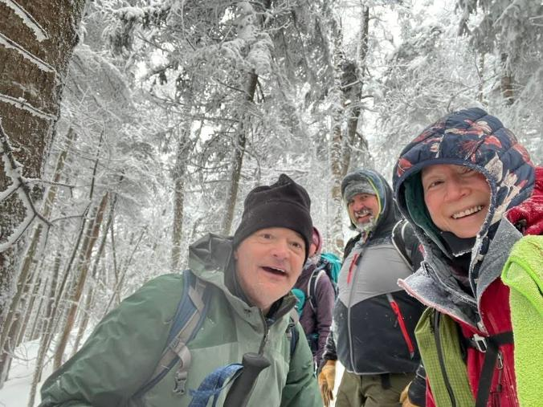
Mountain:Waumbek
Companions:Solo
List:NH Grid
Notes: Was below zero degrees for entire day. Ran into familiar faces Jon and Jen Clarke and Deborah Burke.
Mountain:Isolation
Companions:Solo
List:NH Grid
Notes: Ran up Isolation via the shorter Isolation Express and Engine Hill bushwhacks. Met Mari and Denise at Black Mountain ski area as they had just finished a day of downhill skiing.
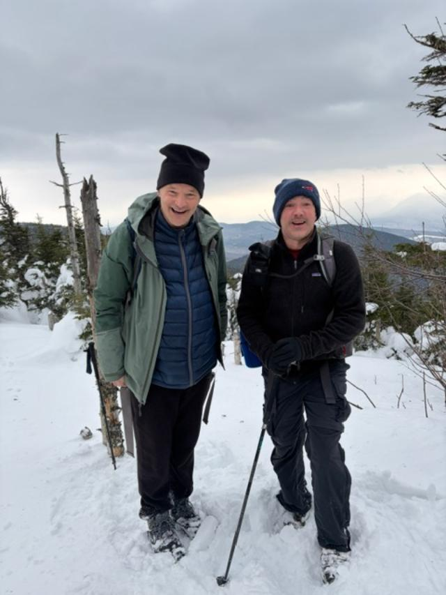
Companions: Sean
List:NH Grid
Notes: Great day to grid out Waumbek. Parked in the winter parking lot. Had good weather to finish one the easier White Mountain 4000ers.
Notes:Weather was too cold in January and February to hike often
Mountain:Garfield
Companions: Solo
List:NH Grid
Notes: Great day to grid out Garfield. The sun came out as I was on summit. Small spruce trees near the top started the have the snow melt as I was walking under them. It was an easy hiking day as I started from the cottage I rented in Thornton while other friends Mari and Brian skiied.
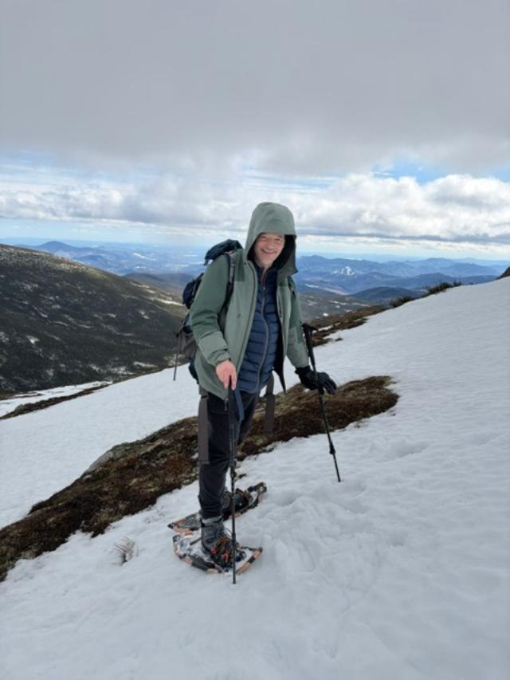
Mountain:Monroe
Companions: Solo
List:NH Grid
Notes: Hiked Monroe via old trail to and from Gem Pool. The old trail was well worn and the new relocation was seldom used in winter. The relocation had only opened in the previous year. The stream crossings were dangerous and a guy that I was with fell in a stream crossings upto his waist. The temps were melting all of the snow very fast. I landed on my butt at least ten times going down the steep part of the Ammonoosuc Ravine Trail
Mountain:Isolation
Companions: Solo
List:NH Grid
Notes: Loved gridding out March with Isolation. The trails were in great shape and direct to summit. The engine hill bushwhack was in great shape and the Isolation Express had one turn, which I missed as I was following fresh tracks in front of me. Found the worn way on the way down. The standard summer route is longer and wetter.
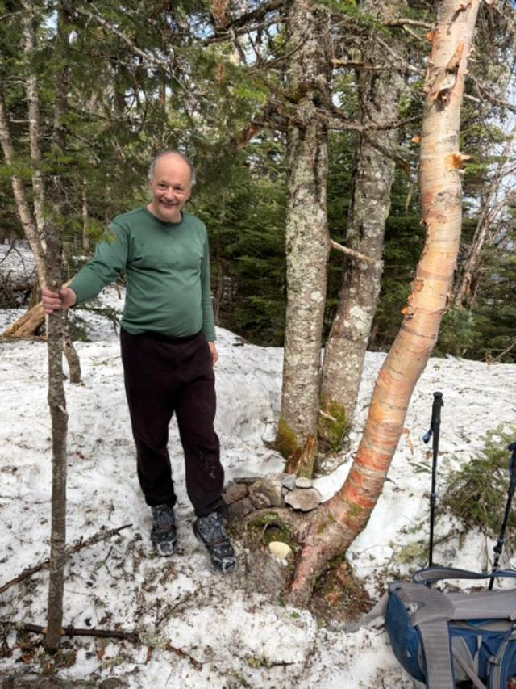
Mountain:Owls Head
Companions:Sean
List:NH Grid
Notes: Chose Owls Head as it the toughest hike remaining for April. Sean and I tried to get it before all the snow melted. Left a microspike at the last stream crossing as I took both off at the bottom of the Brutus bushwhack. It must have slipped out of the mesh of my pack. Another hiker found it the next day and mailed it back to me.
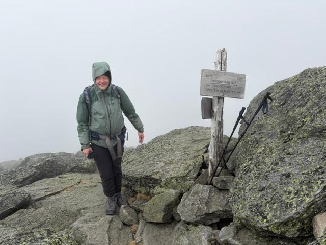
Mountain:Madison
Companions: Sean
List:NH Grid
Notes:Chose Madison as we had clear weather in forecast. Sean came with me to work on his Winter NH48. One trail was broken out. Met other people who came up the Madion Gulf Trail which was not broken out.
Mountain:Cabot
Companions:Solo
List:NH Grid
Notes: Cabot was my last 2026 NH grid peak until December. There was sill snow close to top of mountain. I am gridlocked (cant progress on my NH grid) until December. I will resume my NH grid hiking with ten peaks to do in December. 20 peaks left to finish my 576 peak grid! I will help Mari and Phil with the 52 with a view list over the summer. I will hike a few peaks with Darren and Sean during my time away from the grid. Im already starting to plan my December grid peaks.
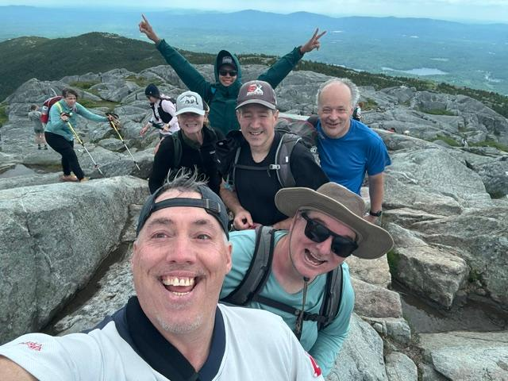
Mountain:Monadnock
Companions: Darren, Sean
List:52 with a view
Notes: A day hike via Pumpelly Trail of Mount Monadnock, my favorite trail on my personal most climbed mountain as I had childhood vacations nearby
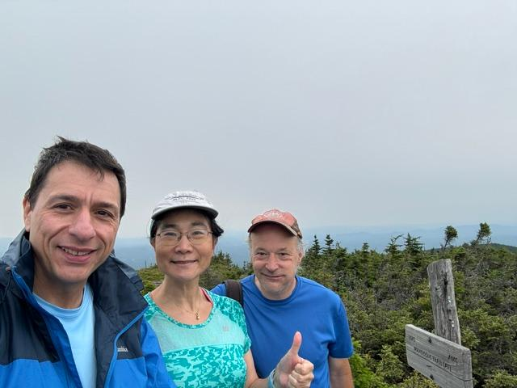
Mountain:Success
Mountain:Tremont
Companions: Mari, Phil, Brian
List:52 with a view
Notes: Saw plane wreckage on side of Mount Success, which I had not see in my previous climbs of Mount Success. Phil joined Mari and I for Success, Brian joined Mari and I for Tremont. These peaks brought Mari to 48/52 peaks for her 52 with a view list
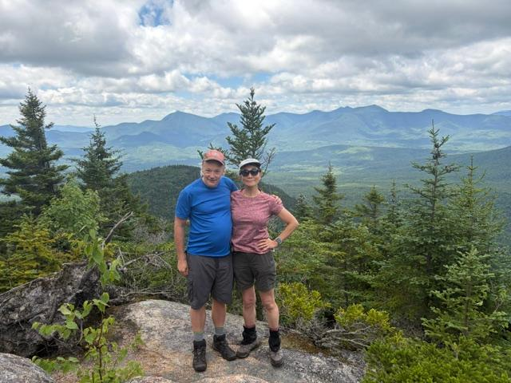
Companions: Sean, AMC Boston Hiking Backpacking
List:52 with a view, NH48, NE100
Notes: A three day, two night, ten person backpack of the 29 mile Kilkenny Ridge Trail. Stayed at the Unknown Pond Campsite and York Pond Kilkenny Ridge trail junction. Hiked Cabot, Waumbek, Weeks, South Weeks, Rogers Ledge and the Horn from my NH48, 52WAV and NE100 lists.
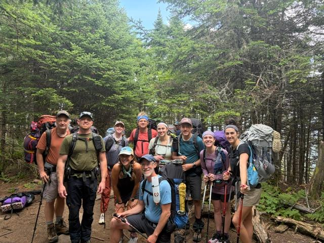
Mountain:Shelburne Moriah Mountain
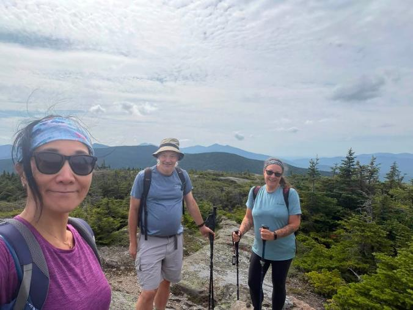
Mountain:Rogers Ledge
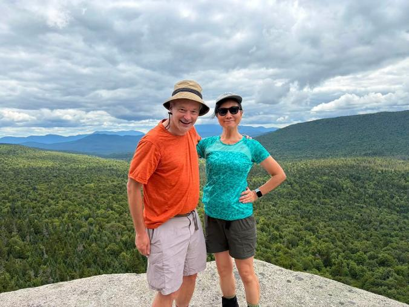
Mountain:Mount Willard
Companions: Mari, Karen
List:52 with a view
Notes:The weekend goal was to finish the last three 52WAV mountains in the White Mountains for Mari. We started at 11am for Rogers Ledge and didnt finish Willard until 6:30pm. We didnt start Shelburne Moriah until 10am, causing us to hike until 5:30pm. Mari and I didnt get home until after 11pm. This weekend brings Mari to 51/52 peaks for her NH 52 with a view list.
Mountain:Zugspitze
Companions:Darren, Bryan, Sean
List:World country high points
Notes: A three day, two night group hike to the highest mountain of Germany
Mountains:Jefferson, Madison
Mountains:Zealand, Bond, West Bond, Bondcliff
Mountain:Isolation
Mountain:Owls Head
Mountain:Carrigain
Mountain:Moriah
List:NH Grid
Notes:Six hard hikes to do in month of December. Ten peaks left if I can get all hikes done. If I cannot complete all six hikes, I will finish my grid in December 2027.